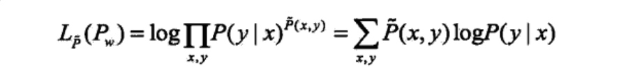
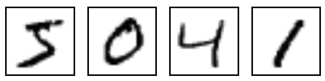
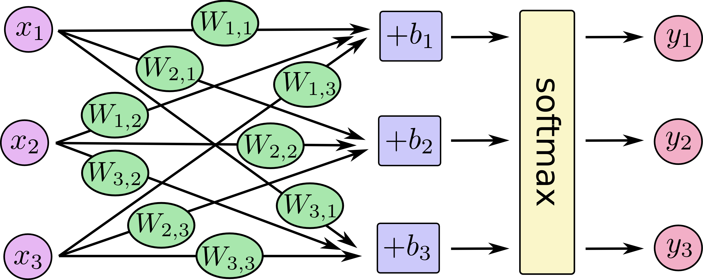

图像去雾相关论文总结
1.特征学习的单幅图像去雾算法 2016年
目的：为提高图像去雾的普适性，提出一种特征学习的单幅图像去雾方法。
方法：通过稀疏自动编码机对有雾图像进行多尺度的纹理结构特征提取，同时抽取各种与雾相关的颜色特征。然后采用多层神经网络进行样本训练，得到雾天条件下纹理结构特征及颜色特征与场景深度间的映射关系，并估算出有雾图像的场景深度图。最后结合大气散射模型，根据场景深度图复原无雾图像。
结论：对实验结果的定性及定量分 析表明，本文算法能有效获取有雾图像的场景深度，复原出视觉效果理想的无雾图像，且具有很好的场景普适性。
理解：本文认为图像去雾的问题可进一步转化为场景深度d的求解问题。本文通过自动编码机获取到图片中物体的纹理特征，然后用多尺度的方法分别提取颜色特征、暗原色特征、颜色衰减特征、纹理结构特征。四者结合对场景深度进行估计。
可以改进的：
算法实时性不够强，效率比较低，可以考虑缩小图片尺寸，降低数据量，从而运用到视频去雾。
对雾气分布不均匀的图像，效果不理想，需要结合不同的气象模型来建立更为鲁棒的物理模型。
2.尺度自适应暗通道先验去雾方法
目的：
针对暗通道先验去雾方法的尺度选择问题 提出了一种尺度自适应方法， 根据图像的颜色和边 缘特征将暗通道求解的尺度自适应地调整到一个合适的范围。
方法：
由颜色特征求解初始尺度：对于图像的不同区域采用不同的尺度求解暗通道: 在亮度较低或饱和度较高的区域，采用较小尺度; 在亮度较高且饱和度较低的区域，采用较大尺度;在景深突变处，采用较小尺度;在平滑区域，采用较大尺度。
由边缘特征对尺度进行修正:由于“光晕”现象发生在景深突变处，如果在边缘附近采用较小的尺度，可使透射率的求解窗口\(Ω_r(x)\)尽量不跨越景深边界，从而减小“光晕”现象; 在非边缘处采用较大的尺度，可以增大 \(J_{dark}(x)→0\)的概率，使复原图像的背景更平滑，噪声和失真更小。 由边缘特征对初始尺度\(r_0(x)\)进行修正.
结论：
整个去雾过程参数自动配置，无需人工干预，兼顾不同尺度复原图像的优点，复原图像色彩自然，对比度提升显著，并有效抑制了“光晕”现象。对多种雾化场景图像的处理结果表明: 文中方法对场景的适应性强， 在任何情况下的处理结果均能达到 DG 方法的最优结果，甚至更好。
理解：
该论文主要是针对HE的去雾方法，对暗通道尺寸进行自适应确定，减少了人工干预的复杂度。
可以改进：
该算法在运行时间上可以改进，也可以利用机器学习的方法来提取图片特征，避免Canny算子的局限性造成的边缘提取误差。
可以与上篇论文进行结合来提高上文尺度特征提取的效率。
文档测试
如果你经常阅读Python的官方文档，可以看到很多文档都有示例代码。比如re模块就带了很多示例代码：
>>> import re
>>> m = re.search('(?<=abc)def', 'abcdef')
>>> m.group(0)
'def'
可以把这些示例代码在Python的交互式环境下输入并执行，结果与文档中的示例代码显示的一致。
这些代码与其他说明可以写在注释中，然后，由一些工具来自动生成文档。既然这些代码本身就可以粘贴出来直接运行，那么，可不可以自动执行写在注释中的这些代码呢？
答案是肯定的。
当我们编写注释时，如果写上这样的注释：


logistic regression(逻辑斯蒂回归)
简介：逻辑斯谛回归（logistic regression)是统计学习中的经典分类方法.最大熵是 概率模型学习的一个准则，将其推广到分类问题得到最大熵模型(maximum entropy model).逻辑斯谛回归模型与最大熵模型都属于对数线性模型.
逻辑斯蒂回归模型
逻辑斯蒂分布

二项逻辑斯蒂回归模型
二项逻辑斯诗回归模型（binomial logistic regression model)是一种分类模型，由条件概率分布\(P(Y|X)\)表示，形式为参数化的逻辑斯谛分布.这里，随机变量X取值为实数，随机变量Y取值为1或0.我们通过监督学习的方法来估计模型参数.

现在考査逻辑斯谛回归模型的特点.一个事件的几率（odds)是指该事件发生的概率与该事件不发生的概率的比值.如果事件发生的概率是p,那么该亊件的几率是\(\frac{1}{1-p}\) ,该事件的对数几率(log odds)或logit函数是

这就是说，在逻辑斯谛回归模型中，输出y = l的对数几率是输入x的线性函数.或者说，输出Y=1的对数几率是由输入x的线性函数表示的模型，即逻辑斯谛回归模型.
换一个角度看，考虑对输入x进行分类的线性函数\(w*x\),其值域为实数域.注意，这里\(x\in R^{n+1},w \in R^{n+1}\).通过逻辑斯谛回归模型定义式(6.5)可以将线性函数\(w*x\)转换为概率：

这时，线性函数的值越接近正无穷，概率值就越接近1；线性函数的值越接近负无穷，概率值就越接近0(如图6.1所示).这样的模型就是逻辑斯谛回归模型.
模型参数估计
逻辑斯谛回归模型学习时，对于给定的训练数据集\(T=\{{(x_1,y_1),(x_2,y_2)...(x_N,y_N)\}}\),其中\(x_i\in R^n,y_i \in \{{0,1\}}\)，可以应用极大似然估计法估计模型参数，从而得到逻辑斯谛回归模型.

多项了逻辑斯蒂回归
上面介绍的逻辑斯谛回归模型是二项分类模型，用于二类分类.可以将其推广为多项逻辑斯缔回归模型(multi-nominal logistic regression model)，用于多类分类.假设离散型随机变量Y的取值集合是{1,2...K}，那么多项逻辑斯谛回归模型是:

二项逻辑斯谛回归的参数估计法也可以推广到多项逻辑斯讳回归.
最大熵模型
最大熵模型（maximum entropy model)由最大熵原理推导实现.这里首先叙述一般的最大熵原理，然后讲解最大熵模型的推导，最后给出最大熵模型学习的形式。
最大熵原理
最大熵原理是概率模型学习的一个准则.最大熵原理认为，学习概率模型时，在所有可能的概率模型（分布）中，熵最大的模型是最好的模型.通常用约束条件来确定概率模型的集合，所以，最大熵原理也可以表述为在满足约束条件的模型集合中选取熵最大的模型.
假设离散随机变量X的概率分布是p(X),则其熵是：

直观地，最大熵原理认为要选择的概率模型首先必须满足已有的事实，即约束条件.在没有更多信息的情况下，那些不确定的部分都是“等可能的”.最大熵原理通过熵的最大化来表示等可能性.“等可能”不容易操作，而熵则是一个可优化的数值指标.
首先，可以通过一个简单的例子来了解一下最大熵原理.

图6.2提供了用最大熵原理进行概率模型选择的几何解释.概率模型集合P可由欧氏空间中的单纯形(simplex)表示，如左图的三角形(2-单纯形).一个点代表一个模型，整个单纯形代表模型集合.右图上的一条直线对应于一个约束 条件，直线的交集对应于满足所有约束条件的模型集合.一般地，这样的模型仍有无穷多个.学习的目的是在可能的模型集合中选择最优模型，而最大熵原理则给出最优模型选择的一个准则.

最大熵模型的定义
最大熵原理是统计学习的一般原理，将它应用到分类得到最大熵模型.
假设分类模型是一个条件概率分布\(P(Y|X),X \in \mathcal{X} \subseteq R^n\)表示输入，\(Y \in \mathcal{Y}\)表示输出，\(\mathcal{X}\)和\(\mathcal{Y}\)分别是输入和输出的集合.这个模型表示的是对于给定的输入\(\mathcal{X}\)，以条作概率\(P(Y|X)\)输出Y.
给定一个训练数据集
\(T= {\{(x_1,y_1),(x_2,y_2),...(x_N,y_N)}\}\)
学习的目标是用最大熵原理选择最好的分类模型。
首先考虑模型应该满足的条件，给定训练数据集，可以确定联合分布P(X,Y)的经验分布和边缘分布P(X)的经验分布，分别以\(\tilde{P}(X,Y)和\tilde{P}(X)\)表示。这里：

用特征函数\(f(x,y)描述输入x和输出y之间的某一个事实\)。其定义是：

特征函数f(x,y)关于经验分布\(\tilde{P}(X,Y)\)的期望值，用\(E_\tilde{P}(f)\)表示：

特征函数f(x,y)关于模型P(Y|X)与经验分布\(\tilde{P}(X)\)的期望值，用\(E_{P}(f)\)表示：

最大熵模型的定义为：

最大熵模型的学习
最大熵模型的学习过程就是求解最大熵模型的过程.最大熵模型的学习可以形式化为约束最优化问题.
对于给定的训练数据集\(T= {\{(x_1,y_1),(x_2,y_2),...(x_N,y_N)}\}\)以及特征函数\(f_i(x,y),i=1,2,...n\),最大熵模型的学习等价于约束最优化问题：

求解约束最优化问题(6.14)〜(6.16)，所得出的解，就是最大熵模型学习的解.下面给出具体推导.
这里，将约束最优化的原始问题转换为无约束最优化的对偶问题.通过求解对偶问题求解原始问题.


下面举例来说明最大熵模型的计算：
例：假设随机变量X有5个取值{A,B,C,D,E}，要估计各个值的概率P(A),P(B),P(C),P(D),P(E).


极大似然估计
从以上最大熵模型学习中可以看出，最大熵模型是由式(6.22)、式(6.23)表示的 条件概率分布.下面证明对偶函数的极大化等价于最大嫡模型的极大似然估计.
己知训练数据的经验概率分布\(\tilde{P}(X,Y)\),条件概率分布\(P(Y|X)\)的对数似然 函数表示为:

当提哦啊煎概率分布P(y|x)是最大熵模型(6.22)和(6.23)时,对数似然函数\(L_ \tilde{p}(P_w)\)为：

比较算式(6.26)和式(6.27),可得：

既然对偶函数\(\psi(w)\)等价于对数似然函数\(L_{\tilde p}(P_w)\) ,于是证明了最大熵模型学习中的对偶函数极大化等价于最大熵模型的极大似然估计这一事实.
这样，最大熵模型的学习问题就转换为具体求解对数似然函数极大化或对偶函数极大化的问题.
可以将最大熵模型写成更一般的形式.

最大熵模型与逻辑斯谛回归模型有类似的形式，它们又称为对数线性模型(log linear model).模型学习就是在给定的训练数据条件下对模型进行极大似然估计或正则化的极大似然估计.


MNIST机器学习入门
MNIST是一个入门级的计算机视觉数据集，它包含各种手写数字图片：

它也包含每一张图片对应的标签，告诉我们这个是数字几。比如，上面这四张图片的标签分别是5，0，4，1。
这里我们将试着训练一个机器学习模型用于预测图片里面的数字。这次我们的主要目的是研究如何使用TensorFlow。所以，我们这里会从一个很简单的数学模型开始，它叫做Softmax Regression。
对应这个教程的实现代码很短，而且真正有意思的内容只包含在三行代码里面。但是，去理解包含在这些代码里面的设计思想是非常重要的：TensorFlow工作流程和机器学习的基本概念。因此，此次会很详细地介绍这些代码的实现原理。
MNIST数据集
MNIST数据集的官网是Yann LeCun's website。在这里，我们提供了一份python源代码（见附录）用于自动下载和安装这个数据集。你可以下载这份代码，然后用下面的代码导入到你的项目里面，也可以直接复制粘贴到你的代码文件里面。
import input_data
mnist = input_data.read_data_sets("MNIST_data/", one_hot=True)
下载下来的数据集被分成两部分：60000行的训练数据集（mnist.train）和10000行的测试数据集（mnist.test）。这样的切分很重要，在机器学习模型设计时必须有一个单独的测试数据集不用于训练而是用来评估这个模型的性能，从而更加容易把设计的模型推广到其他数据集上（泛化）。
正如前面提到的一样，每一个MNIST数据单元有两部分组成：一张包含手写数字的图片和一个对应的标签。我们把这些图片设为“xs”，把这些标签设为“ys”。训练数据集和测试数据集都包含xs和ys，比如训练数据集的图片是mnist.train.images ，训练数据集的标签是 mnist.train.labels。
每一张图片包含28像素X28像素。我们可以用一个数字数组来表示这张图片：

我们把这个数组展开成一个向量，长度是 28x28 = 784。如何展开这个数组（数字间的顺序）不重要，只要保持各个图片采用相同的方式展开。从这个角度来看，MNIST数据集的图片就是在784维向量空间里面的点, 并且拥有比较复杂的结构 (提醒: 此类数据的可视化是计算密集型的)。
展平图片的数字数组会丢失图片的二维结构信息。这显然是不理想的，最优秀的计算机视觉方法会挖掘并利用这些结构信息，我们会在后续教程中介绍。但是在这个教程中我们忽略这些结构，所介绍的简单数学模型，softmax回归(softmax regression)，不会利用这些结构信息。
因此，在MNIST训练数据集中，mnist.train.images 是一个形状为 [60000, 784] 的张量，第一个维度数字用来索引图片，第二个维度数字用来索引每张图片中的像素点。在此张量里的每一个元素，都表示某张图片里的某个像素的强度值，值介于0和1之间。

相对应的MNIST数据集的标签是介于0到9的数字，用来描述给定图片里表示的数字。为了用于这个教程，我们使标签数据是"one-hot vectors"。 一个one-hot向量除了某一位的数字是1以外其余各维度数字都是0。所以在此教程中，数字n将表示成一个只有在第n维度（从0开始）数字为1的10维向量。比如，标签0将表示成([1,0,0,0,0,0,0,0,0,0,0])。因此，mnist.train.labels 是一个 [60000, 10] 的数字矩阵。

现在，我们准备好可以开始构建我们的模型啦！
Softmax回归介绍
我们知道MNIST的每一张图片都表示一个数字，从0到9。我们希望得到给定图片代表每个数字的概率。比如说，我们的模型可能推测一张包含9的图片代表数字9的概率是80%但是判断它是8的概率是5%（因为8和9都有上半部分的小圆），然后给予它代表其他数字的概率更小的值。
这是一个使用softmax回归（softmax regression）模型的经典案例。softmax模型可以用来给不同的对象分配概率。即使在之后，我们训练更加精细的模型时，最后一步也需要用softmax来分配概率。
softmax回归（softmax regression）分两步：第一步
为了得到一张给定图片属于某个特定数字类的证据（evidence），我们对图片像素值进行加权求和。如果这个像素具有很强的证据说明这张图片不属于该类，那么相应的权值为负数，相反如果这个像素拥有有利的证据支持这张图片属于这个类，那么权值是正数。
下面的图片显示了一个模型学习到的图片上每个像素对于特定数字类的权值。红色代表负数权值，蓝色代表正数权值。

我们也需要加入一个额外的偏置量（bias），因为输入往往会带有一些无关的干扰量。因此对于给定的输入图片 x 它代表的是数字 i 的证据可以表示为

其中  代表权重，
代表权重， 代表数字 i 类的偏置量，j 代表给定图片 x 的像素索引用于像素求和。然后用softmax函数可以把这些证据转换成概率 y：
代表数字 i 类的偏置量，j 代表给定图片 x 的像素索引用于像素求和。然后用softmax函数可以把这些证据转换成概率 y：

这里的softmax可以看成是一个激励（activation）函数或者链接（link）函数，把我们定义的线性函数的输出转换成我们想要的格式，也就是关于10个数字类的概率分布。因此，给定一张图片，它对于每一个数字的吻合度可以被softmax函数转换成为一个概率值。softmax函数可以定义为：

展开等式右边的子式，可以得到：

但是更多的时候把softmax模型函数定义为前一种形式：把输入值当成幂指数求值，再正则化这些结果值。这个幂运算表示，更大的证据对应更大的假设模型（hypothesis）里面的乘数权重值。反之，拥有更少的证据意味着在假设模型里面拥有更小的乘数系数。假设模型里的权值不可以是0值或者负值。Softmax然后会正则化这些权重值，使它们的总和等于1，以此构造一个有效的概率分布。（更多的关于Softmax函数的信息，可以参考Michael Nieslen的书里面的这个部分，其中有关于softmax的可交互式的可视化解释。）
对于softmax回归模型可以用下面的图解释，对于输入的xs加权求和，再分别加上一个偏置量，最后再输入到softmax函数中：

如果把它写成一个等式，我们可以得到：

我们也可以用向量表示这个计算过程：用矩阵乘法和向量相加。这有助于提高计算效率。（也是一种更有效的思考方式）

更进一步，可以写成更加紧凑的方式：

实现回归模型
为了用python实现高效的数值计算，我们通常会使用函数库，比如NumPy，会把类似矩阵乘法这样的复杂运算使用其他外部语言实现。不幸的是，从外部计算切换回Python的每一个操作，仍然是一个很大的开销。如果你用GPU来进行外部计算，这样的开销会更大。用分布式的计算方式，也会花费更多的资源用来传输数据。
TensorFlow也把复杂的计算放在python之外完成，但是为了避免前面说的那些开销，它做了进一步完善。Tensorflow不单独地运行单一的复杂计算，而是让我们可以先用图描述一系列可交互的计算操作，然后全部一起在Python之外运行。（这样类似的运行方式，可以在不少的机器学习库中看到。）
使用TensorFlow之前，首先导入它：
import tensorflow as tf
我们通过操作符号变量来描述这些可交互的操作单元，可以用下面的方式创建一个：
x = tf.placeholder("float", [None, 784])
x不是一个特定的值，而是一个占位符placeholder，我们在TensorFlow运行计算时输入这个值。我们希望能够输入任意数量的MNIST图像，每一张图展平成784维的向量。我们用2维的浮点数张量来表示这些图，这个张量的形状是[None，784 ]。（这里的None表示此张量的第一个维度可以是任何长度的。）
我们的模型也需要权重值和偏置量，当然我们可以把它们当做是另外的输入（使用占位符），但TensorFlow有一个更好的方法来表示它们：Variable 。 一个Variable代表一个可修改的张量，存在在TensorFlow的用于描述交互性操作的图中。它们可以用于计算输入值，也可以在计算中被修改。对于各种机器学习应用，一般都会有模型参数，可以用Variable表示。
y = tf.nn.softmax(tf.matmul(x,W) + b)
首先，我们用tf.matmul(X，W)表示x乘以W，对应之前等式里面的 ，这里
，这里x是一个2维张量拥有多个输入。然后再加上b，把和输入到tf.nn.softmax函数里面。
至此，我们先用了几行简短的代码来设置变量，然后只用了一行代码来定义我们的模型。TensorFlow不仅仅可以使softmax回归模型计算变得特别简单，它也用这种非常灵活的方式来描述其他各种数值计算，从机器学习模型对物理学模拟仿真模型。一旦被定义好之后，我们的模型就可以在不同的设备上运行：计算机的CPU，GPU，甚至是手机！
训练模型
为了训练我们的模型，我们首先需要定义一个指标来评估这个模型是好的。其实，在机器学习，我们通常定义指标来表示一个模型是坏的，这个指标称为成本（cost）或损失（loss），然后尽量最小化这个指标。但是，这两种方式是相同的。
一个非常常见的，非常漂亮的成本函数是“交叉熵”（cross-entropy）。交叉熵产生于信息论里面的信息压缩编码技术，但是它后来演变成为从博弈论到机器学习等其他领域里的重要技术手段。它的定义如下：

y 是我们预测的概率分布, y' 是实际的分布（我们输入的one-hot vector)。比较粗糙的理解是，交叉熵是用来衡量我们的预测用于描述真相的低效性。更详细的关于交叉熵的解释超出本次试验的范畴，但是很有必要好好理解它。
为了计算交叉熵，我们首先需要添加一个新的占位符用于输入正确值：
y_ = tf.placeholder("float", [None,10])
然后我们可以用 计算交叉熵:
计算交叉熵:
cross_entropy = -tf.reduce_sum(y_*tf.log(y))
首先，用 tf.log 计算 y 的每个元素的对数。接下来，我们把 y_的每一个元素和 tf.log(y_) 的对应元素相乘。最后，用 tf.reduce_sum 计算张量的所有元素的总和。（注意，这里的交叉熵不仅仅用来衡量单一的一对预测和真实值，而是所有100幅图片的交叉熵的总和。对于100个数据点的预测表现比单一数据点的表现能更好地描述我们的模型的性能。
现在我们知道我们需要我们的模型做什么啦，用TensorFlow来训练它是非常容易的。因为TensorFlow拥有一张描述你各个计算单元的图，它可以自动地使用反向传播算法(backpropagation algorithm)来有效地确定你的变量是如何影响你想要最小化的那个成本值的。然后，TensorFlow会用你选择的优化算法来不断地修改变量以降低成本。
train_step = tf.train.GradientDescentOptimizer(0.01).minimize(cross_entropy)
在这里，我们要求TensorFlow用梯度下降算法（gradient descent algorithm）以0.01的学习速率最小化交叉熵。梯度下降算法（gradient descent algorithm）是一个简单的学习过程，TensorFlow只需将每个变量一点点地往使成本不断降低的方向移动。当然TensorFlow也提供了其他许多优化算法：只要简单地调整一行代码就可以使用其他的算法。
TensorFlow在这里实际上所做的是，它会在后台给描述你的计算的那张图里面增加一系列新的计算操作单元用于实现反向传播算法和梯度下降算法。然后，它返回给你的只是一个单一的操作，当运行这个操作时，它用梯度下降算法训练你的模型，微调你的变量，不断减少成本。
现在，我们已经设置好了我们的模型。在运行计算之前，我们需要添加一个操作来初始化我们创建的变量：
init = tf.initialize_all_variables()
现在我们可以在一个Session里面启动我们的模型，并且初始化变量：
sess = tf.Session()
sess.run(init)
然后开始训练模型，这里我们让模型循环训练1000次！
for i in range(1000):
batch_xs, batch_ys = mnist.train.next_batch(100)
sess.run(train_step, feed_dict={x: batch_xs, y_: batch_ys})
该循环的每个步骤中，我们都会随机抓取训练数据中的100个批处理数据点，然后我们用这些数据点作为参数替换之前的占位符来运行train_step。
使用一小部分的随机数据来进行训练被称为随机训练（stochastic training）- 在这里更确切的说是随机梯度下降训练。在理想情况下，我们希望用我们所有的数据来进行每一步的训练，因为这能给我们更好的训练结果，但显然这需要很大的计算开销。所以，每一次训练我们可以使用不同的数据子集，这样做既可以减少计算开销，又可以最大化地学习到数据集的总体特性。
评估我们的模型
那么我们的模型性能如何呢？
首先让我们找出那些预测正确的标签。tf.argmax是一个非常有用的函数，它能给出某个tensor对象在某一维上的其数据最大值所在的索引值。由于标签向量是由0,1组成，因此最大值1所在的索引位置就是类别标签，比如tf.argmax(y,1)返回的是模型对于任一输入x预测到的标签值，而 tf.argmax(y_,1) 代表正确的标签，我们可以用 tf.equal 来检测我们的预测是否真实标签匹配(索引位置一样表示匹配)。
correct_prediction = tf.equal(tf.argmax(y,1), tf.argmax(y_,1))
这行代码会给我们一组布尔值。为了确定正确预测项的比例，我们可以把布尔值转换成浮点数，然后取平均值。例如，[True, False, True, True] 会变成 [1,0,1,1] ，取平均值后得到 0.75.
accuracy = tf.reduce_mean(tf.cast(correct_prediction, "float"))
最后，我们计算所学习到的模型在测试数据集上面的正确率。
print sess.run(accuracy, feed_dict={x: mnist.test.images, y_: mnist.test.labels})
这个最终结果值应该大约是91%。
这个结果好吗？嗯，并不太好。事实上，这个结果是很差的。这是因为我们仅仅使用了一个非常简单的模型。不过，做一些小小的改进，我们就可以得到97％的正确率。最好的模型甚至可以获得超过99.7％的准确率！（想了解更多信息，可以看看这个关于各种模型的性能对比列表。)
附件：input_data

Copyright © 2017 Powered by LZH, Theme used GitHub CSS.